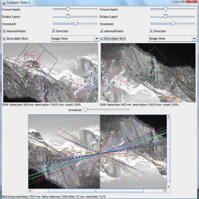
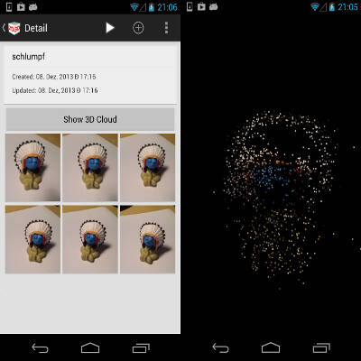
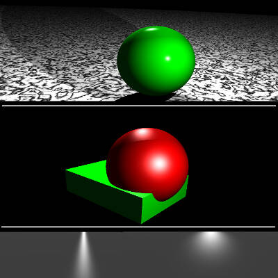
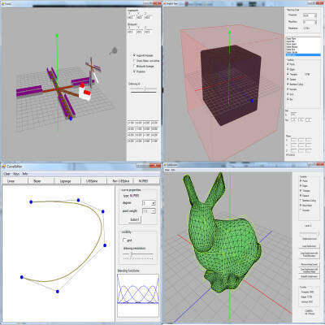
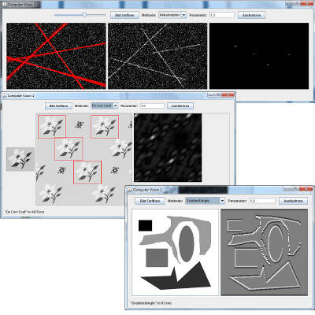
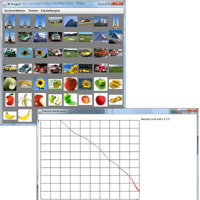
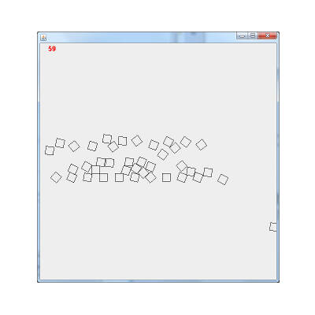
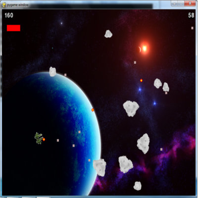

Hello I'm Peter from Leipzig and I'm a softwaredeveloper.
I'm interested in 3D Computergraphics, Image Processing and Algorithms. With my actual career I was able to appropriate
a strong knowledge about these topics but don't have the feeling that is enough. I like to read Papers, Research in other different
topics and to exchange my knowledge with other people. In the near future I really want to learn more about Machine Learning, Big Data,
Data Mining and complex technologies with this background. For me the brain twist and the feeling I will never understand it, is a really
challenging and motivating situation. In the end I was able to solve everything what I started with.
MY RESUME
EXPERIENCE
Scientific Assistant
GFaI e.V.
The "Gesellschaft zur Förderung angewandter Informatik e.V." gave me the chance to work on my master thesis as a full scientific assistant. The thesis was about Feature Detection on human 3D-Bodyscandata. It was a great to figure out what it means to have responsibility. I had to made my own decisions and had also to hold contact with project partners.
10/2014 - 03/2015Student Assistant
GFaI e.V.
In the time as a Student Assistant at the "Gesellschaft zur Förderung angewandter Informatik e.V." as a research Institut, I had the chance to get expert skills in C++. I worked 20 h per week and learned a lot of stuff about 3D Computergraphics, 3D Algorithms, 3D Scanning Technologys and Company Processes. It was a great exchange of knowledge with challenging background.
03/2013 - 09/2014Biker
Bike Tour through West-Europe
After finish my Bachelor I made a long bike tour through West-Europa. In over 3000 km my legs brought my from Lyon to Porto. It was a good chance to proof my English and learn more about my self. At the trip I also worked one month as a gardener in the area of Algarve, Portugal. I can all people recommend this travel speed.
10/2011 - 09/2012Software developer
Spatial View GmbH
It was a placement as a part of the Bachelor study. In this time I was able to improve my C++ skills. I also learned a lot about stereoscopic images and displays.
03/2011 - 05/2011EDUCATION
HTW Berlin
Internationale Medieninformatik, Master of Science
After one year break, biking through Europe, I continued my study. By changing the university of applied science I was looking for more challenges. In this 2.5 years I specialised on Computer Vision/Image Processing. I learned a lot about Structure From Motion, (Visual) Information Retrieval, Image Features and Computer Vision. I also choose some lessons in Games where I figured out how less time it is to compute one frame. My master thesis was in coorperation with "Gesellschaft zur Förderung angewandter Informatik e.V." and was about Segmentation and Feature Detection on human 3D-Bodyscandata.
10/2012 - 03/2015HTW Dresden
Medieninformatik, Bachelor of Science
I started this study without any programming skills but in the beginning I really had a good feeling that I made the right choice. After getting the basic programming skills I figured out that computergraphics and writing algorithms is the most fun for me. So I concentrated me to learn in this topics the most and get practice by programming a lot. My bachelor thesis was about: "Managed Multimedia with XNA and WPF".
10/2008 - 09/2011TECHNOLOGYS
90%
C/C++
80%
Java
69%
Python
55%
C#
82%
Eclipse
65%
OpenGL
59%
OpenCV
89%
Visual Studio
OTHER:
LaTeX, Microsoft Foundation Classes (MFC), Git, Point Cloud Library (PCL), Windows, ScalaReally hope to learn more!
PORTFOLIO

Speeded Up Robust Features
I implemented the Speeded Up Robust Features (SURF) Algorithm after the Paper. First part was the Feature Detection where are approximated Filter are used. The description of the Feature was computed by the Gradients. Later I used the SURF Feature for Visual Information Retrieval and examined if it is possible to a neuronal network for dimension reduction of SURF feature vectors.
Where: HTW Berlin Language: Java

Structure from Motion
In a student project we build an app for android for the reconstruction of real object by structure from motion. I was responsible for the image processing and algorithmic part. The app didn't work in any case but I learned a lot about stereoscopic mathemathics.
Where: HTW Berlin Language: Java

Raytracer
I implemented many intersection algorithms for a basic Raytracer. After finding the intersection the next task was to programm different lightning models (phong- and blinn-shading). With textures and bump-mapping the small raytracer was complete. Where: HTW Dresden Language: C#

3D Computer Graphics
At my Bachlore time I implemented many algorithms in Computer Graphics. I understand what projection, rasterization, triangulation, splines, volume modell, subdivision and other basic computer graphics things are. The employment at the "Gesellschaft zur Förderung angewandter Informatik e.V." made my knowledge in the direction of 3D really strong. There I implemented several plugins for Final Surface, an application for analyze, editing and creating of 3D content. For privacy reasons I can't go more in details here.
Where: HTW Dresden, GFaI e.V. Language: C#, C++

Image Processing
At the HTW Berlin my main focus was to Visual Computing. So I learned and implemented a lot of image processing algorithms. In direction Computer Vision I have now practical experience by programming hough-transformation, filters, correlation coefficents and my own project was on symmetry detection on house facades. I also know now, how to vectorize binary images by the potrace algorithm.
Where: HTW Berlin Language: Java

Visual Information Retrival
A really interesting topic with challenging tasks. I learned and programmed the basics for Visual Information Retriaval (Thumbnails, Median-Cut Algorithm). In the lesson project I implemented a version of a Color-Based Histogram as a Image descriptor. I also used my implementation of SURF for finding similiar Images in an Database. A topic where I definitly want learn more.
Where: HTW Berlin Language: Java

2D Physic Engine
After my master study it was time to implement my own project. Actually I'm writing a 2D pyhsice engine. The Basic knowledge about the Game Loop I know from my study. The rest is collision detection (Seperate Axis Theorem), impulse calculation and other interesting formulas.
Where: At my desk Language: Java

Real Time Interactive System
In the modul at the HTW Berlin we developed a System with keyboard input, sound output and graphic output. All of that we had to handle in a game loop. Wasn't that easy after we started to add a partical system which made the application really slow. We also plugged some sprites to the Box2D physiscs engine. I really like python!
Where: HTW Berlin Language: python